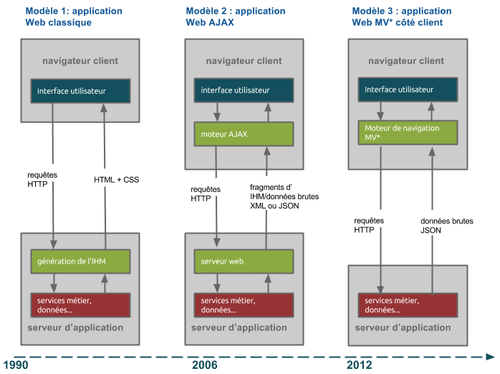
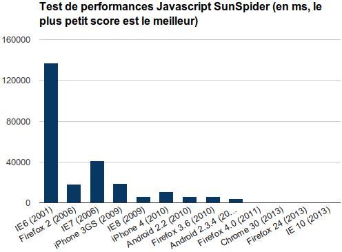

Les Nouvelles Architectures Web Et Leur Impact Sur Les Dsi
Les nouvelles architectures front Web et leur impact sur les DSI - Partie 1
cet article a été publié une première fois le 29/10/2013 sur le blog d’OCTO Technology : https://blog.octo.com/les-nouvelles-architectures-front-web-et-leur-impact-sur-les-dsi-partie-1
Les applications Web évoluent. Depuis les premiers sites en HTML statique jusqu’aux applications AJAX de ces dernières années, en passant par les multiples technologies de sites Web dynamiques (PHP, ASP, Java, Rails…), les architectures applicatives et les outils pour les mettre en place connaissent régulièrement des avancées majeures et des points de ruptures.
Depuis deux ans, nous voyons venir une nouvelle vague technologique qui submerge le paysage des applications Web. Celle-ci n’a pas encore de nom bien défini comme ont pu l’avoir les RIA ou AJAX. Nous les appellerons les “architectures MV* côté client”.
Elles se constituent principalement de ce principe d’architecture : le serveur ne doit plus gérer l’affichage mais seulement envoyer des données brutes à afficher, et toute la génération des écrans et la gestion des interactions avec l’utilisateur doivent être géré côté client, c’est-à-dire dans le navigateur.
Dans ce billet, nous préciserons cette architecture et expliquer les raisons de son émergence. Dans un second billet, nous verrons pourquoi il est pertinent de les mettre en place dès aujourd’hui, les opportunités qu’elles offrent, et quels sont les impacts à prévoir pour les DSI.
Les nouvelles archis front Web : de quoi parle-t-on ?
Le schéma ci-dessous illustre l’évolution des architectures d’applications Web :

Modèle 1 : application Web classique
Dans le premier schema, l’application Web est principalement exécutée côté serveur. Celui-ci envoie donc directement au navigateur les pages HTML, le CSS et éventuellement du JavaScript pour faire quelques comportement riches. Ensuite, à chaque action utilisateur nécessitant de nouvelles données, le serveur est interrogé et renvoie la nouvelle page HTML.
Modèle 2 : application Web AJAX
Le deuxième schema introduit le pattern AJAX, pour Asynchronous Javascript And XML. apparu au milieu des années 2000 (voir l’article de Jesse James Garrett : http://www.adaptivepath.com/ideas/ajax-new-approach-web-applications/ ).
Ce principe d’architecture permet de rendre l’application plus réactive en réduisant les échanges entre le navigateur et le serveur : lorsqu’une action utilisateur engendre un appel client pour récupérer des nouvelles données, on ne va rafraîchir qu’une portion de l’écran et non plus toute la page. Le serveur va alors renvoyer seulement des fragments d’IHM. Cela nécessitait la mise en place d’outils JavaScript côté client pour gérer ces rafraîchissements partiels, que ce soit par exemple en utilisant la librairie jQuery et sa fonction $.ajax, ou en utilisant des outils plus intégrés aux plateformes serveurs comme Java Server Faces ou Google Web Toolkit pour Java.
Cette architecture apportait plus de réactivité mais aussi plus de complexité. Les outils pour la mettre en place engendraient de nombreux écueils : l’utilisation massive de jQuery rendait une application impossible à maintenir sans mettre en place des règles d’architectures techniques précises et nécessitant de très fortes compétences (ce qu’offrent aujourd’hui les frameworks MV* comme Backbone JS ou AngularJS), et les frameworks côté serveur comme JSF pour Java étaient trop lourds et trop complexes malgré leur volonté apparente de simplifier les développements, induisant de nombreux bugs et problèmes de performances.
Modèle 3 : application Web MV* côté client
Le troisième schéma représente la nouvelle architecture dont il est question ici : les architectures MV côté client*. Le principe est ici en rupture avec les deux premières : cette fois le serveur ne renvoie que des données brutes non mises en forme pour l’affichage. C’est côté client, dans le navigateur, que l’écran est généré.
Le terme MV* se réfère au pattern MVC pour [http://fr.wikipedia.org/wiki/Mod%C3%A8le-vue-contr%C3%B4leur](Modèle Vue Contrôleur), qui est très utilisé côté serveur pour découper les différentes problématiques de gestion des vues et des données. Nous utilisons de plus en plus le terme MV* pour les nouvelles architectures afin de montrer que l’implémentation dans les applications est souvent, par pragmatisme, un peu différente du MVC pur. Cela reste un débat d’expert…
L’important dans cette nouvelle architecture est donc le déplacement de toute la logique d’IHM du serveur vers le client.
Cette séparation des responsabilités entre le serveur et le client qui n’est pas une nouveauté en soi a été remise au goût du jour par les applications natives pour mobiles, consommant des API indépendantes des clients consommateurs. Les nouvelles architectures d’applications Web étendent ce choix aux applications Web.
Pourquoi ces nouvelles architectures n’ont pas été mises en oeuvre plus tôt ? Au fond, le langage JavaScript existe depuis que le Web existe, le principe ne semble pas si révolutionnaire que ça surtout qu’il s’apparente fortement aux applications client-serveur classiques existant avant le Web, alors pourquoi ne pas avoir pensé à ces architectures plus tôt ?
La réponse est simple : ce n’était pas possible, sauf à s’appeler Google !
En effet, 2 facteurs bridaient les possibilités de développement JavaScript :
les capacités et les performances limitées des navigateurs le manque d’industrialisation du développement JavaScript La fin des limitations des navigateurs Le premier point était évident jusqu’à l’arrivée des dernières version d’Internet Explorer 9 et encore plus Internet Explorer 10. Les lenteurs et les nombreux bugs des versions précédentes d’Internet Explorer interdisaient de déployer des applications utilisant massivement JavaScript.
Sauf à disposer de la force de frappe d’une équipe d’ingénieurs Google, vouloir développer un Gmail dans Internet Explorer 6 n’était tout simplement pas réaliste.
Cela a bien changé depuis que Firefox et encore plus Chrome ont bousculé le marché et que Microsoft a rattrapé son retard, comme le montre le graphique ci-dessous :

Montrant les résultats des tests de performances JavaScript Sunspider de différents navigateurs, ce schema illustre parfaitement la rupture qui est arrivée aux alentours de 2010, avec l’amélioration des performances d’Internet Explorer : les performances entre IE 6 et IE8 à ce test ont été améliorées d’un facteur x25 en passant de 177000 ms à 7000 ms !
Depuis les performances continuent de s’améliorer sensiblement, et cela couplé aux nouvelles capacités des terminaux aussi bien mobiles que fixes permet d’utiliser le navigateurs pour autre chose que l’affichage de pages Web : générer les pages dynamiquement, faire du dessin 2D ou 3D, exécuter des algorithmes complexes, etc.
L’industrialisation du développement JavaScript Avoir une plateforme d’exécution puissante ne servirait à rien si on ne pouvait pas développer efficacement pour.
La deuxième révolution technologique du développement Web concerne justement l’outillage de développement JavaScript.
Si vous suivez le blog OCTO, vous avez déjà pu voir passer des articles concernant par exemple AngularJS ou Grunt. Ce sont justement deux outils illustrant le nouvel écosystème de développement JavaScript, que l’on peut résumer en deux grandes familles d’outils :
-
les frameworks de développement : là où on utilisait déjà des librairies comme jQuery, qui facilitaient certains développement en JavaScript, les développeurs disposent désormais de véritables frameworks permettant de structurer l’application. L’intérêt de ces frameworks est double : accélérer les développements et assurer une bonne maintenabilité du code. Parmi les plus connus aujourd’hui on trouve notamment AngularJS, BackboneJS et EmberJS.
-
les outils d’industrialisation : l’industrialisation des développements JavaScript a explosé ces deux dernières années, en s’inspirant fortement de ce qui a déjà été fait pour les autres plateformes comme Java. De la même manière que les développeurs Java utilisent Maven pour automatiser le build et les tests de leurs applications, les développeurs JavaScript peuvent aujourd’hui utiliser Grunt pour automatiser les tests et la construction de leur application, ainsi que le workflow spécifique au développement front : concaténation des fichiers, obfuscation, minification, génération de sprites CSS, etc. L’ensemble de ces outils a déjà été abordé dans cet article du blog : https://blog.octo.com/jenkins-pour-le-back-notepad-pour-le-front/ .
L’industrialisation du développement Javascript est par ailleurs poussée également par le fait que l’utilisation de Javascript s’étend à d’autres domaines que les applications Web, et notamment au développement serveur avec NodeJS. Cela d’autant plus frappant que NodeJS est utilisé comme socle technique par GruntJS et ses nombreux plug-ins.
En conclusion, tous les outils sont là en 2013 pour faire du développement JavaScript de manière efficace et industrielle.
Conclusion de la première partie Dans cet article, nous avons présenté ce que l’on entend par “architectures MV* côté client”, et pourquoi elles émergent aujourd’hui.
Dans les parties suivantes, nous verrons pourquoi il faut utiliser ces architectures dès aujourd’hui, quels sont les écueils à éviter et quels sont les impacts sur vos DSI.